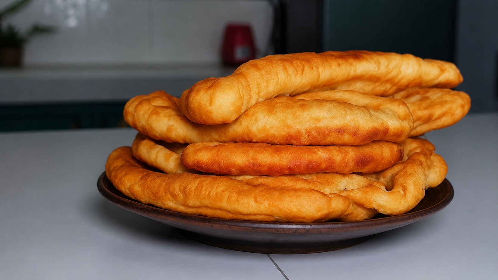

Champús con cachangas: tradición y crecimiento desde un emprendimiento local
En Chiclayo, la comida no solo cumple una función alimentaria, sino también cultural. Existen preparaciones que forman parte de la vida cotidiana y que, con el tiempo, se convierten en símbolos de identidad. En ese contexto se sitúa el emprendimiento de Ángela María Villalobo Vasquez, dedicado a la venta de champús con cachangas.
Buen Diente
El origen del negocio
El emprendimiento se inició hacia el final de la pandemia por COVID-19, cuando muchas personas buscaron nuevas fuentes de ingreso. En este caso, la base fue el conocimiento familiar: Ángela aprendió la preparación del champús y las cachangas gracias a su madre, quien le transmitió técnicas propias de la cocina norteña.
A partir de ese aprendizaje, comenzó a desarrollar su propio negocio, enfocándose en mejorar progresivamente la calidad de sus productos.
Los primeros desafíos
En sus inicios, el negocio enfrentó dificultades debido a la baja visibilidad. “Al inicio se vendía poco, porque la gente todavía no probaba el champús”, recuerda Ángela. Sin embargo, el trabajo constante permitió mejorar la preparación y generar mayor aceptación.

Champús: bebida caliente a base de maíz, piña y especias. Cachanga: masa frita crocante por fuera y suave por dentro.
La propuesta gastronómica
El champús es una bebida espesa y dulce elaborada con maíz, piña, canela y clavo de olor. Su preparación lo convierte en una opción tradicional dentro de la gastronomía del norte del Perú.
Las cachangas, por su parte, son masas fritas de harina de trigo, crocantes por fuera y suaves por dentro. Suelen consumirse como acompañamiento, formando una combinación ampliamente reconocida en la región.

Crecimiento y consolidación
Con el tiempo, el negocio logró posicionarse gracias a la recomendación de los clientes y la difusión en redes sociales como TikTok, lo que permitió ampliar su alcance.
Actualmente cuenta con una clientela más estable, incluyendo vecinos y visitantes que buscan una experiencia vinculada a la tradición local.
Tradición e identidad
Este emprendimiento refleja la vigencia de la cocina tradicional en un contexto contemporáneo, manteniendo vivas recetas que forman parte de la identidad cultural de la región.

Más que un negocio, esta propuesta representa una forma de preservar la tradición gastronómica local, conectando a las personas con su historia a través del sabor.